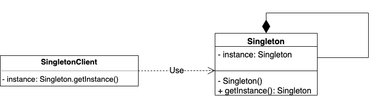
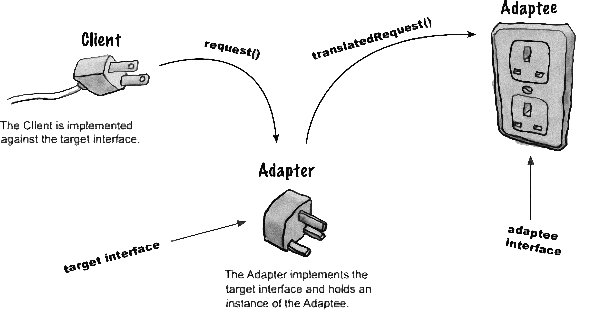
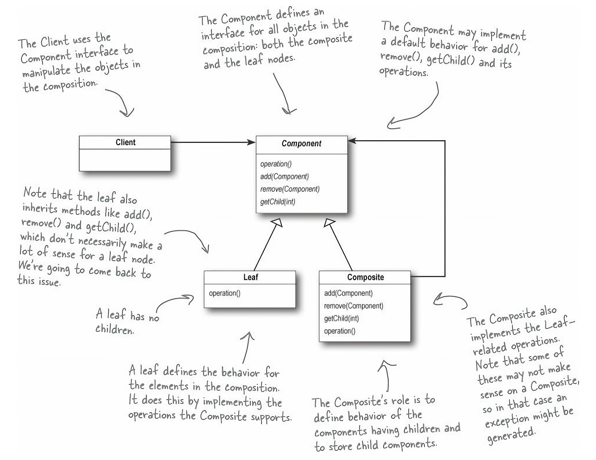
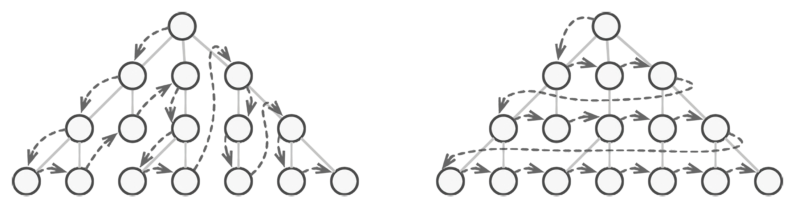
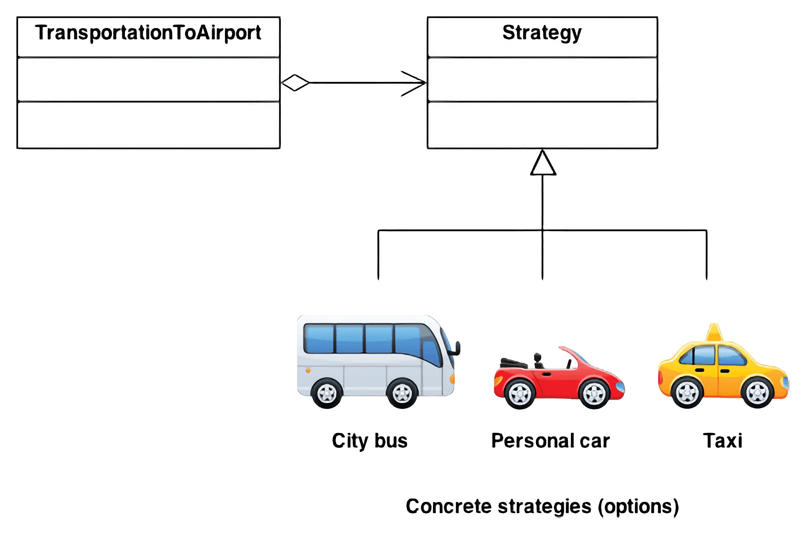
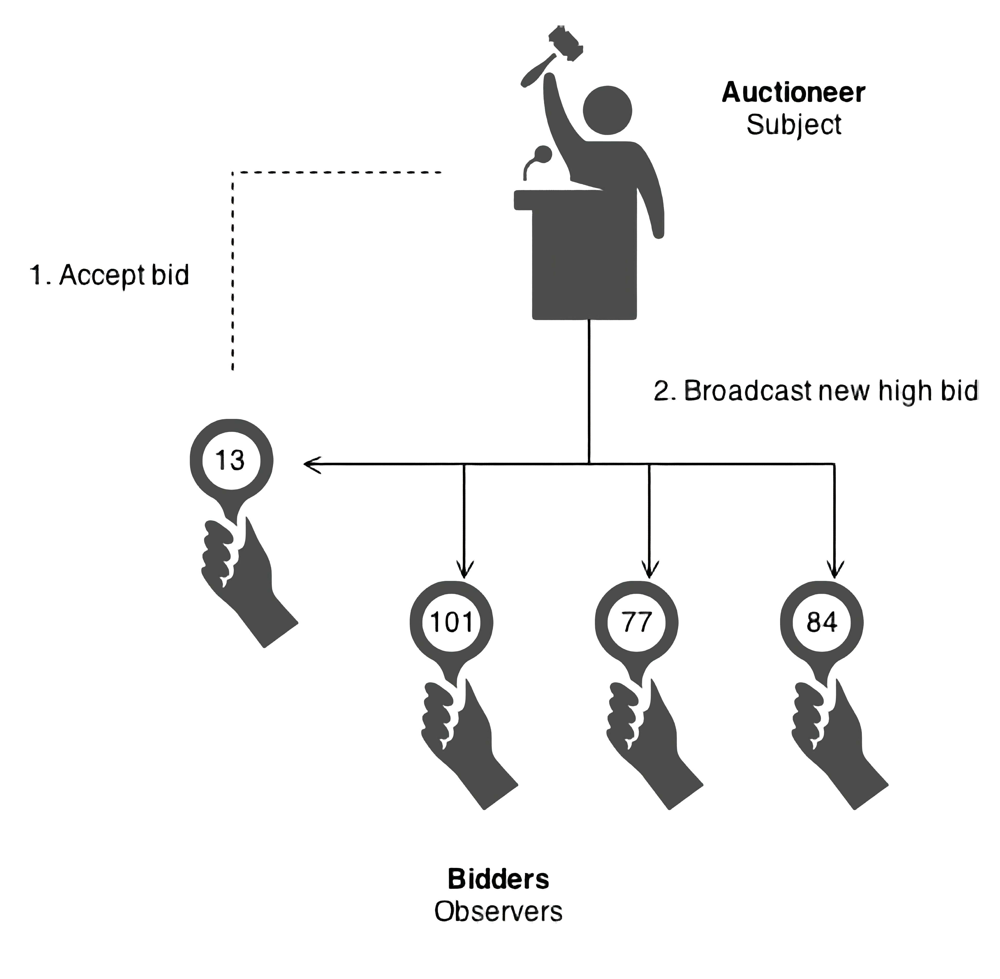

Thursday, March 7, 2024
Today’s Agenda
- Recap from last lecture
- Emerging Design Patterns
- Foundational Design Patterns
- Anti-Patterns
Design Patterns Introduction
Design patterns are essential coding idioms for building better, more modular programs. They provide a toolkit for decoupling interacting code modules, avoiding common mistakes, and giving developers a shared language to describe program designs.
The “Gang of Four”
The term “design pattern” gained prominence with the influential “Gang of Four” book: Design Patterns: Elements of Reusable Object-Oriented Software by Erich Gamma, Richard Helm, Ralph Johnson, and John Vlissides. This book, focusing on object-oriented programming, identified over 20 fundamental design patterns.
Evolution of Design Patterns
Since the publication of the Gang of Four book, the field of design patterns has expanded significantly. Numerous other patterns and variations have been identified, each offering unique benefits and addressing specific design challenges in software development.
Importance of Design Patterns
Understanding design patterns is crucial for software developers. It not only helps in creating more efficient and effective solutions but also in avoiding the trap of Cargo Cult Programming, where patterns are used without understanding their purpose or applicability.
Categories of Design Patterns
Design patterns can be broadly categorized into three main groups:
- Creational Patterns
- Structural Patterns
- Behavioral Patterns
Each category addresses a different set of design concerns and can be further divided into subcategories.
Some Top Patterns
Creational Patterns:
- Singleton Pattern
- Factory Method Pattern
- Builder Pattern
Structural Patterns:
- Adapter Pattern
- Composite Pattern
Behavioral Patterns:
- Iterator Pattern
- Strategy Pattern
- Observer Pattern
Emerging Design Patterns
Emerging Design Patterns in Software Development
Modern challenges in application development, such as scalability, performance, and maintainability, have catalyzed the evolution of design patterns. These new patterns complement and extend the foundational Creational, Structural, and Behavioral categories to address contemporary software engineering problems effectively.
Note
Design patterns are not invented; they are discovered. They are the result of solving common problems and discovering common solutions. This is evolving as new challenges emerge in software development, so do the design patterns.
Concurrency Patterns
Concurrency patterns are vital for maximizing the performance of applications by efficiently managing multi-threaded and parallel computing processes.
- Thread Pool: Manages a pool of worker threads for executing multiple tasks concurrently, optimizing resource utilization and improving application throughput.
- Promise: Facilitates asynchronous programming by representing the future value of an operation, enhancing code readability and maintainability.
Cloud Design Patterns
Cloud design patterns specifically address the challenges encountered in cloud computing, such as managing transient failures and efficiently handling dynamic resource scaling.
- Circuit Breaker: Automatically detects and prevents repeated failures, avoiding resource depletion and enabling fast recovery.
- Bulkhead: Limits the impact of failures to parts of an application, ensuring that one component’s issues do not compromise the entire system’s availability.
Security Design Patterns
Security design patterns are essential for developing secure applications, focusing on mitigating threats and enhancing mechanisms for data protection and access control.
- Authentication Enforcer: Centralizes user authentication, ensuring consistent and secure access policy enforcement across applications.
- Security Sandbox: Provides a tightly controlled environment to execute untrusted code, preventing it from accessing or harming the host system.
Message-Driven Patterns
Message-driven patterns are crucial for systems leveraging event-driven architectures, ensuring efficient, reliable message flow and asynchronous communication between components.
- Message Queue: Temporarily stores messages to be processed, enabling decoupling of message production from consumption.
- Publish/Subscribe: Allows messages to be published to multiple subscribers, facilitating broad and flexible communication between disparate parts of an application.
Data Management Patterns
These patterns provide strategies for efficiently handling large volumes of data, addressing challenges related to big data and intensive data application requirements.
- Repository: Encapsulates the logic required to access data sources, providing a more abstract and flexible approach to data management.
- Unit of Work: Keeps track of changes during a transaction and coordinates the writing out of and the resolution of concurrency problems.
Creational Patterns
Overview of Creational Patterns
Creational patterns simplify object creation, providing flexibility in choosing different types of objects for various situations. Imagine not having to assemble your value meal at a fast-food restaurant. Instead, an employee prepares it based on your request. This scenario exemplifies the builder pattern.
Singleton Pattern
The Singleton pattern ensures that a class has only one instance and provides a global point of access to that instance. It is used when exactly one object is needed to coordinate actions across the system.
Singleton Pattern (contd.)
- Private Constructor: Ensures that new instances cannot be created outside the class
- Single Instance: Only one instance of the class is created, stored internally
- Global Access Point: Provides a static method for global access to the instance
Singleton Pattern (contd.)
Where is the Singleton pattern used?
- Application Configuration: For accessing configuration settings from anywhere in the application
- Database Connections: Managing a single database connection shared across the application
- Logging: Coordinating logging activities through a single logging instance
- Device Driver Objects: Ensuring only one instance of the driver is managed and accessed globally
Factory Method Pattern
The Factory Method pattern is a creational design pattern that provides an interface for creating an object, but let subclasses decide which object to instantiate. This pattern is used to delegate the instantiation logic to child classes.

Factory Method Pattern (contd.)
- Creator: The class that declares the factory method, which returns an object of a Product class. The Creator’s subclasses usually provide the implementation of this method.
- Product: Defines the interface of objects the factory method creates.
- ConcreteCreator: Implements the factory method to return an instance of a ConcreteProduct.
Factory Method Pattern (contd.)
Where is the Factory pattern used?
- Framework Integration: When a framework needs to standardize the way objects are created but still allow for extensibility.
- Complex Object Creation: When the creation process involves logic that should not be exposed to the composing classes.
- System Configuration: To manage and centralize the creation of objects based on system configuration or external resources.
- Plugin and Extension Systems: Where the system needs to be extended with plugins or modules, and these extensions need to be instantiated without the system knowing about their concrete classes.
Builder Pattern
The Builder pattern is a creational design pattern that allows for the construction of complex objects step by step. Unlike other creational patterns that construct products in a single step, the Builder pattern constructs the product step by step under the control of the director.
Builder Pattern (contd.)
- Builder: Provides the interface for creating parts of the Product.
- Concrete Builder: Implements the steps defined in the Builder interface.
- Director: Directs the construction process using the Builder interface.
- Product: The final object produced by the Builder.
Builder Pattern (contd.)
Where is the Builder pattern used?
- Customized Products: When creating complex objects that require extensive customization.
- Object Composition: Managing the composition of objects with many optional components or intricate construction processes.
- Immutability: When the product must be created in a completed state once all its parts are specified, ensuring the product is immutable once constructed.
- Parsing Complex Representations: Like parsing and converting raw data into objects with complex structures.
Structural Patterns
Overview of Structural Design Patterns
Structural design patterns ease design by identifying simple ways to realize relationships among entities. Structural patterns are concerned with how classes and objects are composed to form larger structures.
- build new classes or interfaces from existing ones
- hide implementation details
- provide cleaner or more specialized interfaces
Adapter Pattern
The adapter pattern is used to allow two incompatible interfaces to work together. This is done by creating a wrapper around one of the interfaces that converts it into an interface expected by the client.
Adapter Pattern (contd.)
- Client: the class that uses the target interface
- Target: the interface that the client expects
- Adaptee: the interface that needs to be adapted
- Adapter: the class that wraps the adaptee and implements the target interface
Adapter Pattern (contd.)
Where is the Adapter pattern used?
- Legacy System Integration: Adapting new software to old codebases or APIs
- Third-party/External Library Integration: Translating interface calls for compatibility
- Cross-platform Applications: Abstracting platform-specific operations
- Database Access: Abstracting database operations behind a common interface
- Component-Based Development: Adapting different interface conventions for compatibility
Composite Pattern
Composite is a structural design pattern that lets you compose objects into tree structures and then work with these structures as if they were individual objects.
Composite Pattern (contd.)
- Component: the interface for all objects in the composition
- Leaf: the class that represents the leaf objects in the composition
- Composite: the class that represents the composite objects in the composition
Composite Pattern (contd.)
Where is the Composite pattern used?
- GUIs: For UI components like windows, panels, buttons
- File Systems: Treats files and directories uniformly
- Graphics: Helps in managing shapes in drawings
- Web Development: In handling web components
- Game Development: For scene graphs in games
Behavioral Patterns
Overview of Behavioral Patterns
Behavioral design patterns are all about improving how objects in a system talk to each other. They make sure that objects can communicate in a flexible way, just like creating rules for a smooth conversation.
- Roles in Patterns: Imagine a workplace, where you have supervisors, workers, coordinators, and messengers. Each has a clear job in making things run smoothly.
Iterator Pattern
The Iterator pattern, a cornerstone in behavioral design, enables sequential traversal of complex data structures while concealing their internal mechanics. This pattern allows access to elements of a collection (be it a list, stack, tree, etc.) without revealing the collection’s underlying structure.
Iterator Pattern (contd.)
- Uniform Access to Collections: Provides a consistent way to traverse different collection types.
- Decouples Collection from Traversal: The collection’s structure need not be exposed for its elements to be accessed sequentially.
- Supports Multiple Traversals: Multiple iterators can be active at the same time on the same collection.
Iterator Pattern (contd.)
Where is the Iterator pattern used?
- Navigating Complex Data Structures: For collections with complex structures like trees or graphs.
- Language Interpreters: To traverse data structures without exposing their internal representations.
- Database Management: Iterating over results from database queries.
- UI Components: To sequentially access elements in menus, lists, or other collection-based UI components.
Strategy Pattern
The Strategy pattern is a behavioral design pattern that enables selecting an algorithm’s runtime behavior among a family of algorithms. It defines a family of algorithms, encapsulates each one, and makes them interchangeable. Strategy lets the algorithm vary independently from clients that use it.
Strategy Pattern (contd.)
- Separates Algorithm from Context: Ensures that the implementation details of an algorithm are not exposed to the class that uses it.
- Easy to Switch Strategies: Allows changing the behavior of a class during runtime by changing its Strategy.
- Encourages Open/Closed Principle: Classes are open for extension but closed for modification.
Strategy Pattern (contd.)
Where is the Strategy pattern used?
- Sorting Algorithms: Different sorting algorithms can be selected based on the size and type of the dataset.
- Compression Techniques: Allows choosing between different compression algorithms based on requirements.
- Payment Methods: Different payment strategies can be employed depending on the user’s choice or locale.
- Navigation Routes: Selecting different routing algorithms in a navigation system.
Observer Pattern
The Observer pattern is a behavioral design pattern in which an object, known as the subject, maintains a list of its dependents, called observers, and notifies them of any state changes, usually by calling one of their methods. It is used to establish a one-to-many dependency between objects so that when one object changes state, all its dependents are notified and updated automatically.
Observer Pattern (contd.)
- Decouples Subjects from Observers: Allows for a flexible relationship between subjects and observers without tight coupling.
- Supports Broadcast Communication: When the subject changes, all registered observers are notified.
- Dynamic Subscription: Observers can be added or removed at runtime.
Observer Pattern (contd.)
Where is the Observer pattern used?
- GUI Components: Notifying interested components when a user action occurs (e.g., button click, menu selection).
- Application State Monitoring: Observing and reacting to changes in application state.
- Event Management Systems: Implementing event listeners and handlers.
- Data Binding: Automatically updating the UI when the data model changes.
Anti-Patterns
What is an Anti-Pattern?
An anti-pattern is a common response to a recurring problem that is usually ineffective and risks being highly counterproductive. Anti-patterns are often used to describe a bad practice or a bad solution to a problem. They are the opposite of design patterns, which are best practices for solving a problem.
Common Anti-Patterns
- Spaghetti Code: Unstructured and difficult to maintain code
- God Object: A single class that knows and does too much
- Magic Strings: Hard-coded strings that should be defined as constants
- Copy-Paste Programming: Reusing code by copying and pasting it
- Golden Hammer: Over-reliance on a familiar tool or technology
Note
We will talk more about anti-patterns when we discuss code review and refactoring.